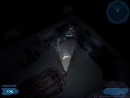

Shadowgrounds
Dieser Artikel wurde für die folgenden Ubuntu-Versionen getestet:
Dieser Artikel ist mit keiner aktuell unterstützten Ubuntu-Version getestet! Bitte diesen Artikel testen und das getestet-Tag entsprechend anpassen.
Zum Verständnis dieses Artikels sind folgende Seiten hilfreich:
Shadowgrounds  ist ein 3D-Science-Fiction-Shooter mit Top-Down-Perspektive, welches PhysX von Nvidia unterstützt. Mit den zur Verfügung stehenden aufrüstbaren Waffen stellt sich der Spieler den Alien-Horden, welche den Aussenposten der Jupiter-Kolonie angegriffen haben, in 10 Leveln entgegen.
ist ein 3D-Science-Fiction-Shooter mit Top-Down-Perspektive, welches PhysX von Nvidia unterstützt. Mit den zur Verfügung stehenden aufrüstbaren Waffen stellt sich der Spieler den Alien-Horden, welche den Aussenposten der Jupiter-Kolonie angegriffen haben, in 10 Leveln entgegen.
Nur durch Taktik überlebst du ...
|  |
| Spielszene |
Installation¶
Desura¶
Das Spiel kann nach dem Kauf über die Internetseite oder den Client zur Spieleliste hinzugefügt und gestartet werden [4].
LGP¶
Nach dem Einlegen des Datenträgers wird das Spiel durch den Aufruf von [1] [3]
./setup.sh
in das angegebene Verzeichnis installiert. Anschließend Updates einspielen.
Humble Frozenbyte Bundle¶
Den Installer aus der Aktion Humble Frozenbyte Bundle ausführbar machen [2] und installieren [1]:
./shadowgroundsUpdate1.run
Update¶
LGP¶
Die Updates für die Linux-Version manuell oder automatisch ausführen.
Über "Anwendungen -> Spiele -> Shadowgrounds" kann das Spiel gestartet werden. Beim ersten Start ist der CD-Key erforderlich.
Demo¶
Eine spielbare Demoversion kann von hier  heruntergeladen und wie die Vollversion installiert werden.
heruntergeladen und wie die Vollversion installiert werden.
Deinstallation¶
Humble Frozenbyte Bundle¶
Zur Deinstallation ruft man das Skript removeShortcuts.sh im Installationsverzeichnis auf [1].
LGP¶
Shadowgrounds lässt sich über das Skript LGP_Uninstall deinstallieren.
Probleme & Lösungen¶
libglade-2.0.so.0¶
Erscheint beim Versuch das Spiel zu installieren die Fehlermeldung
./shadowgroundsUpdate1.run: error while loading shared libraries: libglade-2.0.so.0: cannot open shared object file: No such file or directory
so muss die Bibliothek libglade-2.0.so.0.0.7 heruntergeladen und nach libglade-2.0.so.0 umbenannt werden. Diese Bibliothek in den Ordner mit dem Installationsprogramm kopieren und über die folgenden Befehle die Installation einleiten [1]:
export LD_LIBRARY_PATH=. ./shadowgroundsUpdate1.run

Infobox¶
| Shadowgrounds | |
| Genre: | Shooter |
| Sprache: | |
| Veröffentlichung: | 2005 |
| Publisher: | Frozenbyte / Linux Game Publishing |
| Systemvoraussetzungen: | mind. 1.8 GHz x86 / 800 MB RAM / 900 MB freier Festplattenspeicher / 256 MB Grafikkarte |
| Medien: | DVD (1) / Download |
| Strichcode / EAN / GTIN: | 835551000229 |
| Läuft mit: | nativ |
- Erstellt mit Inyoka
-
 2004 – 2017 ubuntuusers.de • Einige Rechte vorbehalten
2004 – 2017 ubuntuusers.de • Einige Rechte vorbehalten
Lizenz • Kontakt • Datenschutz • Impressum • Serverstatus -
Serverhousing gespendet von